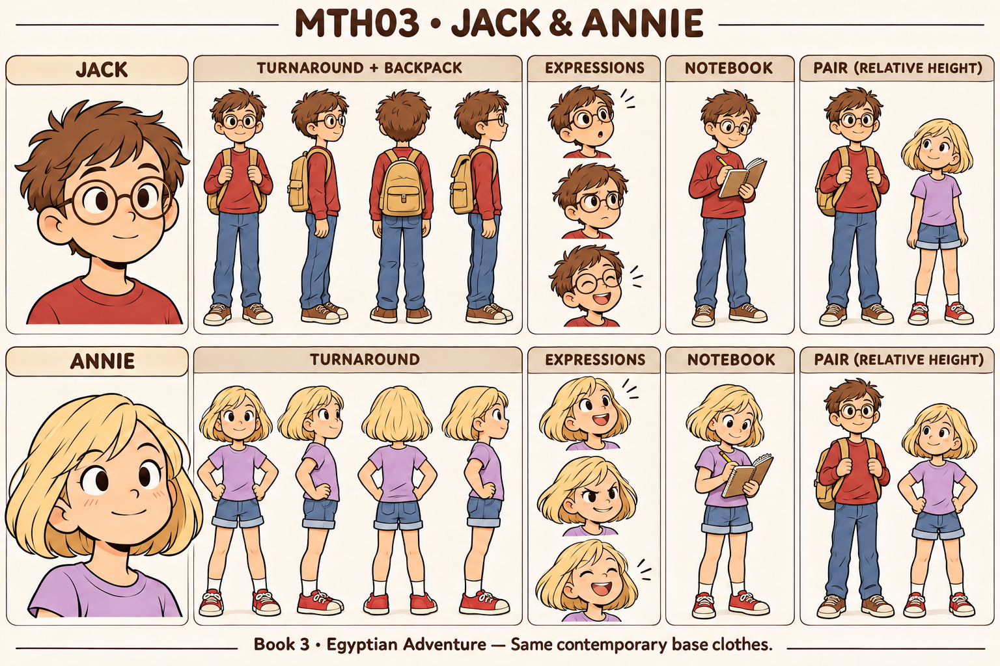
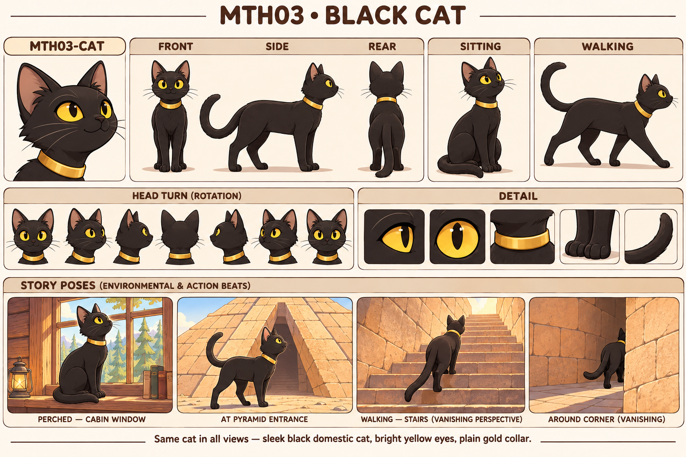
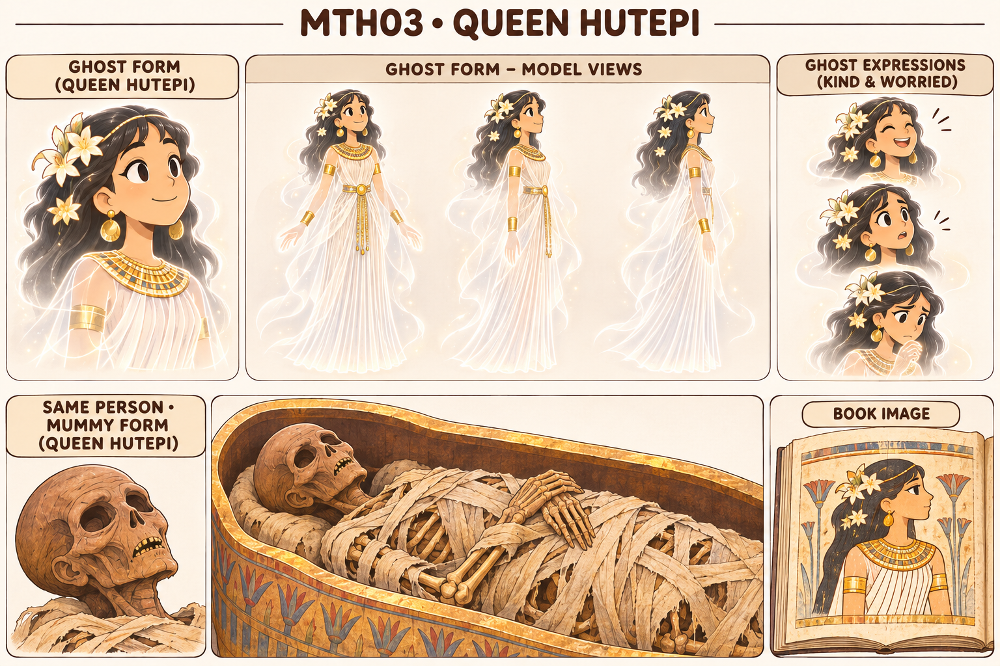
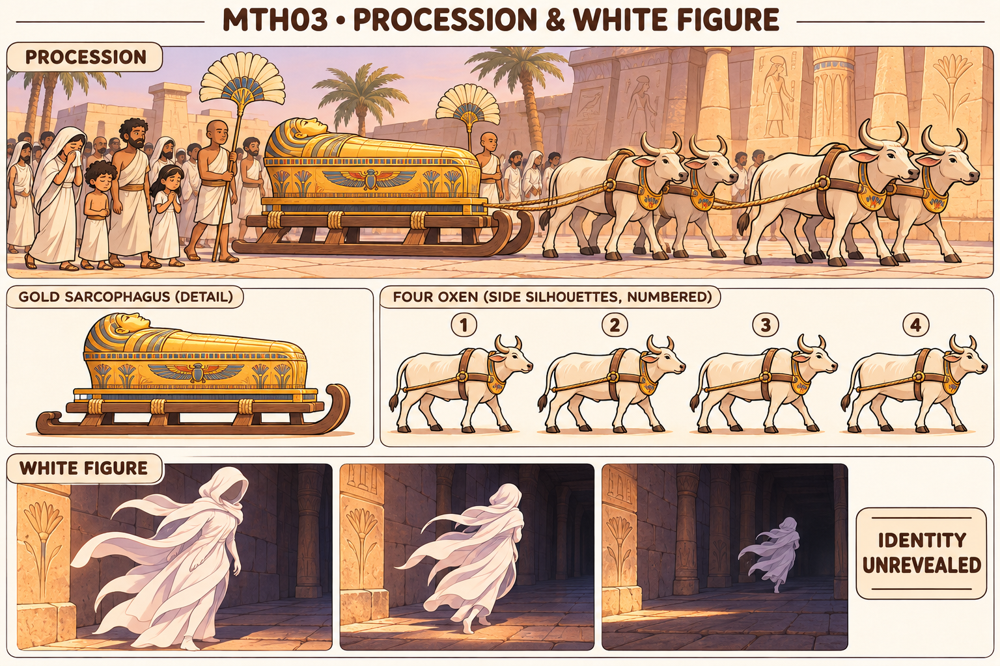
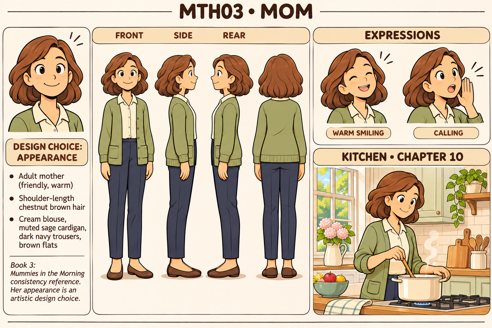

Magic Tree House · Book 3 / 시각 기준 v1
4권의 얼굴·머리·체형과 따뜻한 선화 및 채색을 공통 기준으로 사용합니다. 원문의 등장 여부·복장·소품·상태가 시트의 예시 포즈보다 우선합니다. 아래 시트는 장면 삽화를 위한 참고이며 등장 허가 목록이 아닙니다.
Jack은 갈색 머리·얇은 원형 안경·빨간 긴팔·청바지·갈색 운동화, Annie는 금발 단발·보라 티셔츠·청반바지·빨간 운동화로 고정합니다. 얼굴과 상대 키는 4권 시트를 기준으로 합니다. 색상과 복장 조합은 제작용 설정입니다. 가방·노트는 해당 장면의 소유와 행동을 따릅니다. Annie의 노트 포즈는 형태 참고이며 모든 장면에 노트를 추가하지 않습니다.

이미지를 누르면 원본 크기로 열립니다.검은 털, 노란 눈, 넓은 금목걸이를 유지합니다. 책 속 그림, 실제 고양이, 화면 밖 울음소리를 구분합니다. 소리만 들리는 문장에 고양이를 임의로 그리지 않습니다. 변신이나 정체를 미리 드러내지 않습니다.

이미지를 누르면 원본 크기로 열립니다.검은 머리와 꽃, 주름 많은 흰 드레스, 금장신구를 유령 상태의 기준으로 삼습니다. 유령과 관 속 미라는 같은 인물의 서로 다른 상태입니다. 유령은 4장 말미와 5–6장, 7장 계단·문 장면에 맞추고, 미라는 8장 관 장면에만 사용합니다. 떠나는 배에 유령을 임의로 추가하지 않습니다. Morgan과 혼동하지 않습니다.

이미지를 누르면 원본 크기로 열립니다.가족·하인·조문객, 금빛 관과 나무 썰매, 뿔 달린 소 네 마리를 유지합니다. 행렬 인물의 세부 얼굴은 제작용 설정입니다. 3장 말미와 4장 도입의 흰 형체는 얼굴과 정체를 확정하지 않습니다. 시트의 천 형태는 시각화 선택입니다.

이미지를 누르면 원본 크기로 열립니다.목소리만 들리는 대목과 10장 부엌에서 실제로 등장하는 대목을 구분합니다. 밤색 단발·크림 블라우스·세이지 카디건·남색 바지·갈색 신발은 1권과 공유하는 제작용 외형 설정입니다. 이집트 모험 장면에 배치하지 않습니다.

이미지를 누르면 원본 크기로 열립니다.시트 5장 · 비율 유지 · 원본 전체 표시. 장면별 출연 여부는 원문과 scene manifest를 함께 확인합니다.